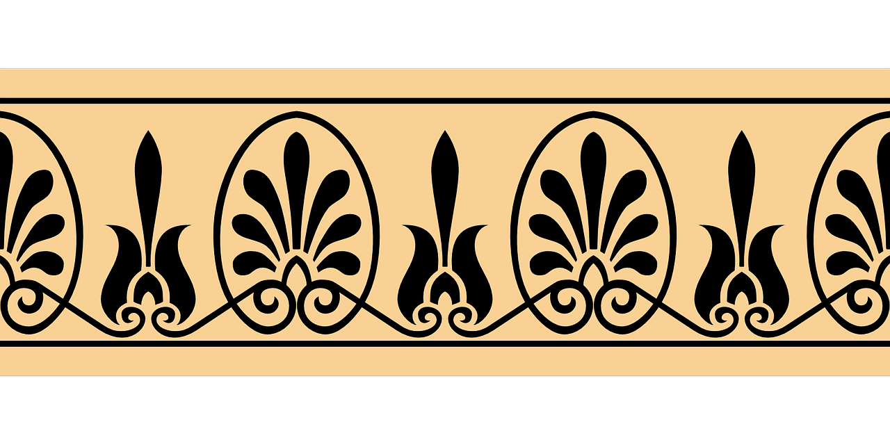

What is Stoicism?
Stoicism is an ancient Greek philosophy that emphasizes reason, self-control, and inner strength. It was originally created by a Greek philosopher by the name of Zeno. While today we view Stoics as someone who can remain calm under pressure; that isn't the only attribute of a Stoic. The Stoics believed that everything around us operates according to a web of cause and effect, resulting in a rational structure of the universe, which they called "Logos". Stoics believed that while you cannot always control the events affecting us, we can have control over how we approach things. Stoics are realists who don’t try to envision a perfect world around them, but rather try to deal with the reality of it while pursuing self-improvement through the four cardinal virtues.

=======================================================================================================================================================================================================================================================
=======================================================================================================================================================================================================================================================
Four Cardinal Virtues
I. Wisdom:
The ability to navigate complex situations in a logical, informed and calm manner.
II. Temperance:
The exercise of self-restrain and moderation in all aspects of life.
III. Justice:
Treating others with fairness even when they have done wrong.
IV. Courage:
Faceing daily challenges with clarity and integrity.
Getting Fired
Getting fired is always an incredibly stressful situation. Life is only becoming more and more expensive, creating more tension and anxiety to maintain your job. People now have so much riding on their job, especially if you have a family to provide for. However, as stressful as this situation may be, it will not be your downfall. It’s easy to allow this tragedy to consume your mental well-being, but with the guidance of Stoicism, you can focus on the present, and handle the situation with a level and clear head.
Applying Stoicism
1. Focus on what you can control: You can't change the past, and you can't control external circumstances like your employer's decision. Instead, focus on what you can control: your reactions, thoughts, and actions moving forward.
2. Embrase the present moment: Recognize that this is a temporary setback, and it doesn't define your worth as a person or an individual.
3. Reframe your perspective: View this event as an opportunity for growth, change, or exploration.
4. Let go of attachments: Let go of any emotional attachment to your previous job, role, or identity. Acknowledge that it's not a part of you; it's just one aspect of your life.
5. Practice self-compassion: Treat yourself with kindness and understanding, just like you would a close friend.
6. Take action: Instead of dwelling on what's lost, focus on what you can do now. Update your resume, network with contacts, or explore new opportunities that align with your values and goals.
7. Cultivate inner strength: Use this experience as an opportunity to build resilience, perseverance, and self-awareness.
Works Cited
Soccio, Douglas J. Archetypes of Wisdom: An Introduction to Philosophy.
Recording for the Blind & Dyslexic, 2006.
Pigliucci, Massimo. “The Philosophy of Stoicism - Massimo Pigliucci.”
YouTube, YouTube, 19 June 2017, www.youtube.com/watch?v=R9OCA6UFE-0&t=21s.